3 Graphical Presentation of Data with ggplot2
3.1 Introduction
In this chapter, we finally look at the consistent and powerful framework for creating visualisations, taking care of many fiddly details (like legends and colours) automatically. We will first examine the concept of tidy data, then the main principles of this grammar of graphics framework, then look at how all the plots in Chapter 2 can be done within this unified framework.
3.2 Data frames and tidy data
As discussed in Chapter 2, we work with data frames in R for data visualisation. If you need a refresher on data frames, refer to Practical 1.
The ggplot2 package works best with data in tidy format. Tidy data
follows three principles:
- Each variable has its own column
- Each observation has its own row
- Each value has its own cell
For example, this is tidy:
## # A tibble: 4 × 3
## student subject score
## <chr> <chr> <dbl>
## 1 Alice Maths 85
## 2 Bob Maths 78
## 3 Alice English 92
## 4 Bob English 88While this is not tidy (scores are spread across multiple columns):
## # A tibble: 2 × 3
## student maths english
## <chr> <dbl> <dbl>
## 1 Alice 85 92
## 2 Bob 78 883.2.1 Why tidy data matters
Consider the built-in AirPassengers dataset, which contains monthly airline
passenger numbers from 1949 to 1960:
AirPassengers## Jan Feb Mar Apr May Jun Jul Aug Sep Oct Nov Dec
## 1949 112 118 132 129 121 135 148 148 136 119 104 118
## 1950 115 126 141 135 125 149 170 170 158 133 114 140
## 1951 145 150 178 163 172 178 199 199 184 162 146 166
## 1952 171 180 193 181 183 218 230 242 209 191 172 194
## 1953 196 196 236 235 229 243 264 272 237 211 180 201
## 1954 204 188 235 227 234 264 302 293 259 229 203 229
## 1955 242 233 267 269 270 315 364 347 312 274 237 278
## 1956 284 277 317 313 318 374 413 405 355 306 271 306
## 1957 315 301 356 348 355 422 465 467 404 347 305 336
## 1958 340 318 362 348 363 435 491 505 404 359 310 337
## 1959 360 342 406 396 420 472 548 559 463 407 362 405
## 1960 417 391 419 461 472 535 622 606 508 461 390 432This is stored as a ts (time series) object, not a data frame. The data
values are partially embedded in the row and column structure (months as
columns, years as implicit rows). While base R can plot this directly using
plot(AirPassengers) because it recognises the ts class, this approach
relies on R having special handling for each data type.
In this module, we strive for a different approach:
- Ensure data is tidy before visualisation (converting special formats to data frames if necessary);
- Use a unified framework (
ggplot2) that works consistently with any tidy data frame.
This may require data wrangling before plotting, but the benefit is a single, consistent approach that works for all data types.
When your data are tidy, each aesthetic mapping in ggplot2 corresponds
to a single column. We will see this principle throughout this chapter.
Lastly, we will use the same datasets as Chapter 2. Make sure you understand that they are both tidy data.
mpg - Fuel economy data (1999-2008):
head(mpg)## # A tibble: 6 × 11
## manufacturer model displ year cyl trans drv cty
## <chr> <chr> <dbl> <int> <int> <chr> <chr> <int>
## 1 audi a4 1.8 1999 4 auto(l5) f 18
## 2 audi a4 1.8 1999 4 manual(m… f 21
## 3 audi a4 2 2008 4 manual(m… f 20
## 4 audi a4 2 2008 4 auto(av) f 21
## 5 audi a4 2.8 1999 6 auto(l5) f 16
## 6 audi a4 2.8 1999 6 manual(m… f 18
## # ℹ 3 more variables: hwy <int>, fl <chr>, class <chr>economics - US economic time series:
head(economics)## # A tibble: 6 × 6
## date pce pop psavert uempmed unemploy
## <date> <dbl> <dbl> <dbl> <dbl> <dbl>
## 1 1967-07-01 507. 198712 12.6 4.5 2944
## 2 1967-08-01 510. 198911 12.6 4.7 2945
## 3 1967-09-01 516. 199113 11.9 4.6 2958
## 4 1967-10-01 512. 199311 12.9 4.9 3143
## 5 1967-11-01 517. 199498 12.8 4.7 3066
## 6 1967-12-01 525. 199657 11.8 4.8 30183.3 Grammar of graphics & ggplot2 package
The unified framework we have been talking about so much is called Grammar of Graphics, advocated by Wilkinson (2005), and implemented in R by Wickham (2016) through the package ggplot2. To install and load the package, do the following:
install.packages("ggplot2") # Only needed once
library(ggplot2) # Load at the start of each sessionThe main principle of the Grammar of Graphics, as well as its ggplot2 implementation, is that plots are built from layers:
- Data: The dataset to visualise
- Aesthetics (
aes): Mappings from data variables to visual properties (x, y, colour, size, shape) - Geoms: Geometric objects that represent the data (points, lines, bars)
- Scales: Control how data values map to visual values
- Facets: Create small multiples by splitting data (see Chapter 6)
- Themes: Control non-data appearance (fonts, backgrounds)
We will discuss the syntax in more detail in Section 3.10 after we have seen several examples.
3.4 One variable, continuous
When we have a single continuous variable, we want to understand its distribution.
3.4.1 Histograms with geom_histogram()
Histograms show the distribution of a continuous variable. Compare this to
hist() in Section 2.2.1.
ggplot(mpg, aes(x = displ)) +
geom_histogram(binwidth = 0.5) +
labs(x = "Engine Displacement (L)", y = "Count")
Figure 3.1: Histogram of engine displacement.
The labs() function is used to add axis labels and titles. We will cover
labs() and other labelling options in detail in Chapter 6.
For a density overlay on this histogram, see Section 7.6 in Chapter 7.
Exercise: Create a histogram of cty (city miles per gallon) from the mpg dataset using geom_histogram(). Experiment with different binwidth values.
3.4.2 Density plots with geom_density()
Density plots provide a smoothed estimate of the distribution. Compare this
to plot(density()) in Section 2.2.2.
ggplot(mpg, aes(x = displ)) +
geom_density() +
labs(x = "Engine Displacement (L)", y = "Density")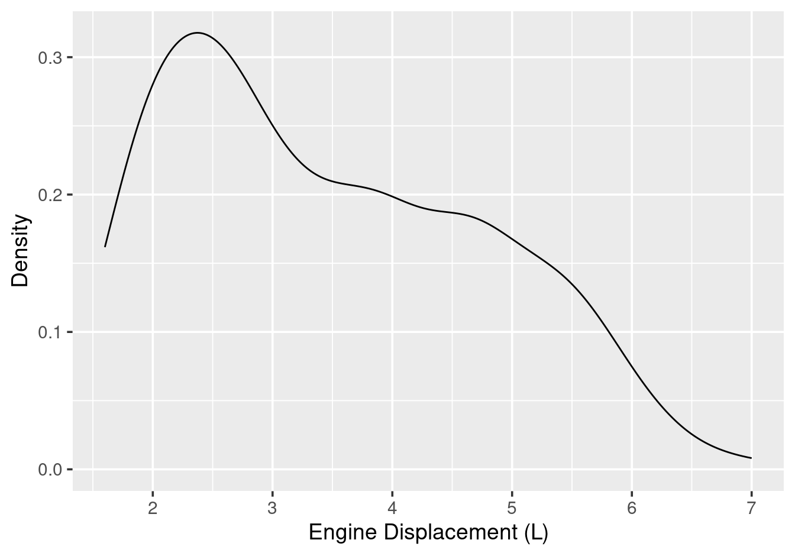
Figure 3.2: Density plot of engine displacement.
Exercise: Create a density plot of cty from the mpg dataset. Add a rug plot using geom_rug().
3.4.3 Boxplots with geom_boxplot()
Boxplots provide a visual summary of the distribution, showing the median,
quartiles, and outliers. Compare this to boxplot() in Section
2.2.4.
ggplot(mpg, aes(y = displ)) +
geom_boxplot() +
labs(y = "Engine Displacement (L)")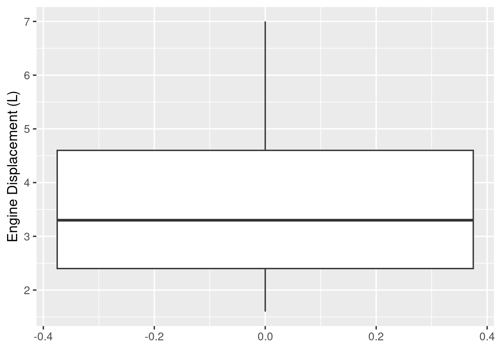
Figure 3.3: Boxplot of engine displacement.
While boxplots are most commonly used to compare distributions across groups (see Section 3.7.3), they are also useful for a single variable to quickly identify the median, spread, and any outliers.
3.5 One variable, discrete
For discrete or categorical variables, we want to see the frequency of each category.
3.5.1 Bar charts with geom_bar()
Bar charts show the count of observations in each category. Compare this
to barplot(table()) in Section 2.3.1.
ggplot(mpg, aes(x = drv)) +
geom_bar() +
labs(x = "Drive Type", y = "Count")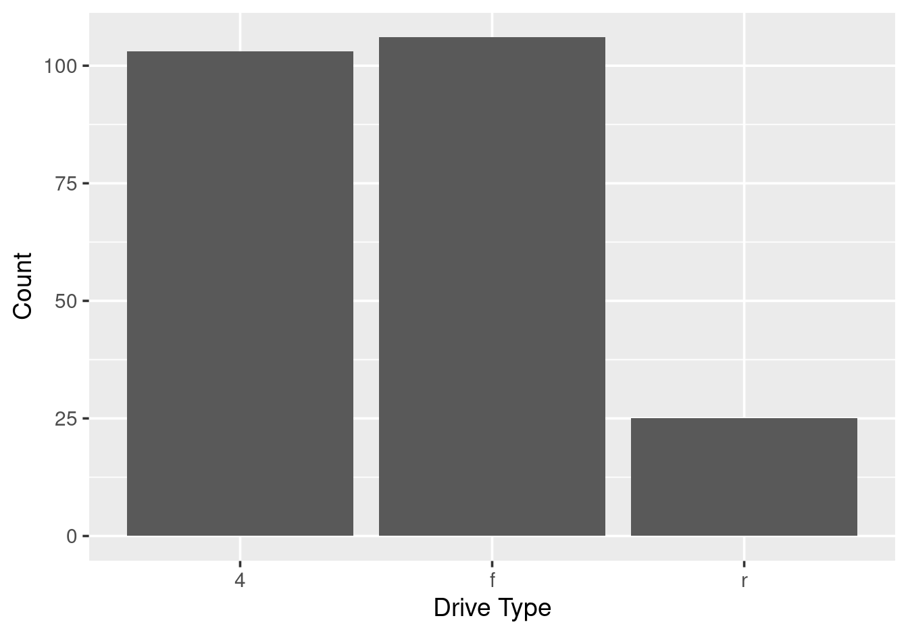
Figure 3.4: Bar chart of drive type.
We will see grouped bar charts in the section on two discrete variables below.
Exercise: Create a bar chart of class (vehicle type) from the mpg dataset using geom_bar(). Add appropriate axis labels.
3.6 Two variables, both continuous
When both variables are continuous, we want to understand their relationship.
3.6.1 Scatterplots with geom_point()
Scatterplots show the relationship between two continuous variables.
Compare this to plot() in Section 3.6.1.
ggplot(mpg, aes(x = displ, y = hwy)) +
geom_point() +
labs(x = "Engine Displacement (L)", y = "Highway MPG")
Figure 3.5: Scatterplot of engine displacement vs highway MPG.
Exercise: Create a scatterplot of cty (\(y\)-axis) versus hwy (\(x\)-axis) from the mpg dataset. Add a trend line using geom_smooth(method = "lm").
3.6.2 Line plots with geom_line()
Line plots connect observations in sequence and are used for time series or
ordered data. Compare this to plot(type = "l") in Section 2.4.2.
For time series data like economics, a line plot shows the trend:
ggplot(economics, aes(x = date, y = unemploy)) +
geom_line() +
labs(x = "Date", y = "Unemployment (thousands)")
Figure 3.6: Unemployment over time in the US.
A scatterplot would not be as informative for time series data — the sequential connection between points is lost:
ggplot(economics, aes(x = date, y = unemploy)) +
geom_point(size = 0.5) +
labs(x = "Date", y = "Unemployment (thousands)")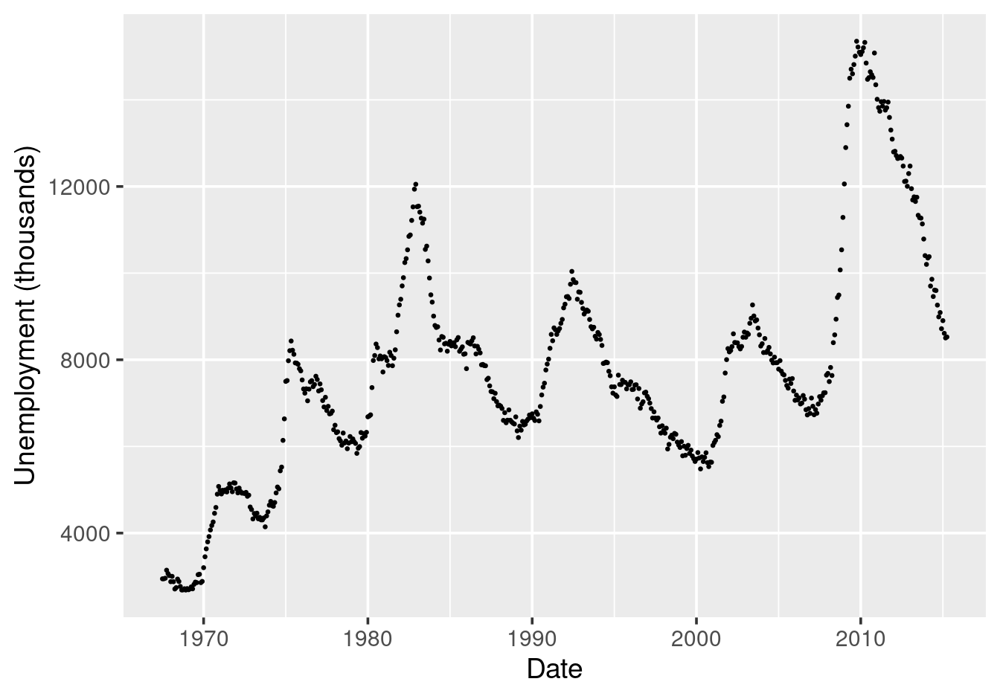
Figure 3.7: Scatterplot of time series data — not as informative.
Exercise: Create a line plot of psavert (personal savings rate) over time from the economics dataset using geom_line().
3.6.3 Pairs plots (scatterplot matrix)
Extending the scatterplot to all pairs of variables simultaneously, the GGally package provides ggpairs().
Compare this to pairs() in Section 2.4.3.
# install.packages("GGally")
library(GGally)
ggpairs(mpg[, c("displ", "cty", "hwy")])This creates a matrix of scatterplots, density plots, and correlation
coefficients for all pairs of variables. Note that GGally is a separate
package that must be installed.
3.7 Two variables, one continuous and one discrete
When we have one continuous variable and one categorical variable, we typically want to compare distributions across groups.
3.7.1 The problem with scatterplots
As in Section 2.5.1, a naive scatterplot doesn’t work well because the discrete variable creates vertical strips of overlapping points:
ggplot(mpg, aes(x = drv, y = displ)) +
geom_point() +
labs(x = "Drive Type", y = "Engine Displacement (L)")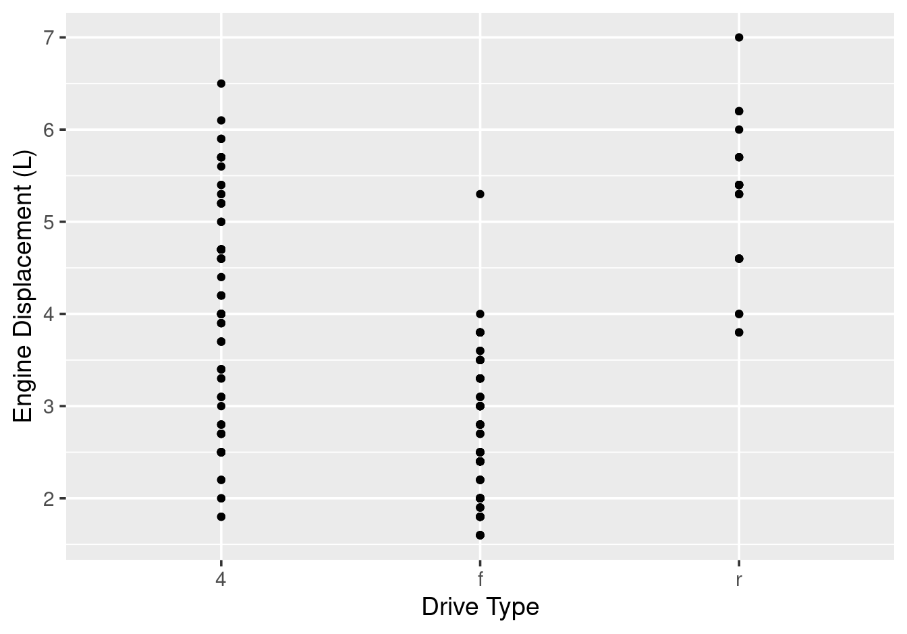
Figure 3.8: Scatterplot for continuous vs discrete — overplotting problem.
Many points overlap, making it hard to see the distribution within each group.
3.7.2 Stripcharts with geom_jitter()
Adding jitter (small random offsets) reveals the overlapping points.
Compare this to stripchart() in Section 2.5.2.
ggplot(mpg, aes(x = drv, y = displ)) +
geom_jitter(width = 0.2) +
labs(x = "Drive Type", y = "Engine Displacement (L)")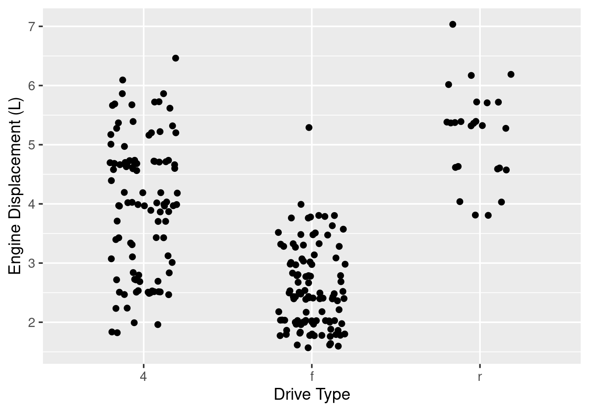
Figure 3.9: Stripchart of engine displacement by drive type.
Exercise: Create a stripchart of cty by class from the mpg dataset using geom_jitter().
3.7.3 Boxplots with geom_boxplot()
Boxplots summarise the distribution with the median, quartiles, and
outliers. Compare this to boxplot() in Section 2.5.3.
ggplot(mpg, aes(x = drv, y = displ)) +
geom_boxplot() +
labs(x = "Drive Type", y = "Engine Displacement (L)")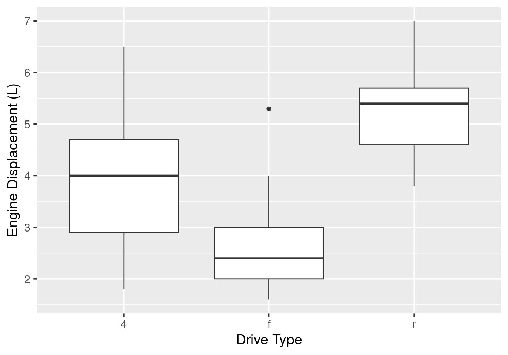
Figure 3.10: Boxplot of engine displacement by drive type.
We will see how to combine stripcharts with boxplots in the section on layering below.
Exercise: Create a boxplot of cty by class from the mpg dataset. Which vehicle class has the best city fuel efficiency?
3.8 Two variables, both discrete
When both variables are categorical, we are looking at the joint frequency distribution — how often each combination of categories occurs.
3.8.1 Grouped bar charts with geom_bar()
Map a second variable to fill to create grouped bar charts. Compare this
to grouped barplot() in Section 2.6.1.
ggplot(mpg, aes(x = drv, fill = factor(cyl))) +
geom_bar(position = "dodge") +
labs(x = "Drive Type", y = "Count", fill = "Cylinders")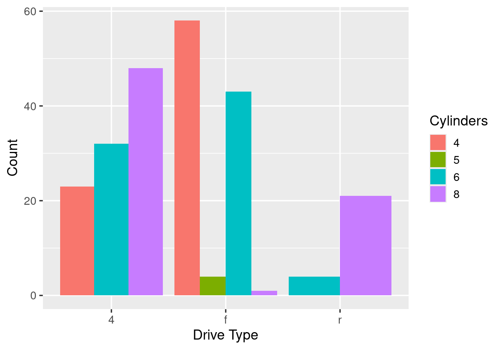
Figure 3.11: Grouped bar chart showing drive type by number of cylinders.
Customising the fill colours is covered in Chapter 4.
3.8.2 Count plots with geom_count()
An alternative to grouped bar charts is geom_count(), which shows the
count of observations at each combination of \(x\) and \(y\) values using
circles of varying sizes:
ggplot(mpg, aes(x = drv, y = factor(cyl))) +
geom_count() +
labs(x = "Drive Type", y = "Cylinders", size = "Count")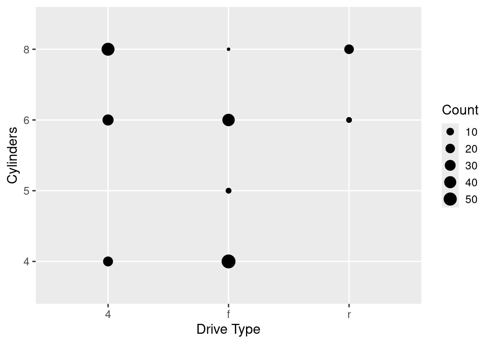
Figure 3.12: Count plot showing drive type by number of cylinders.
Each circle’s size represents the number of observations at that combination. This can be useful when you have many categories and a grouped bar chart becomes cluttered.
However, for variables with only a few categories (like drv with 3 levels
and cyl with 4 levels), geom_count() may not add much value over a
simple table. Consider whether the visualisation actually improves
understanding compared to a numerical summary.
3.8.3 When a table suffices
As mentioned in Section 2.6.3, for two discrete variables, a simple table sometimes communicates the information more clearly than a plot:
table(mpg$drv, mpg$cyl)##
## 4 5 6 8
## 4 23 0 32 48
## f 58 4 43 1
## r 0 0 4 21I know I am repeating myself, but don’t create visualisations for the sake of visualisations — think about whether a plot actually adds value over a numerical summary.
3.9 The power of layers
One of ggplot2’s greatest strengths is its layered approach. You can
combine multiple geoms in a single plot, and even plot data from different
datasets.
3.9.1 Combining multiple geoms
Earlier sections introduced geoms individually. Now we combine them.
Line plot with points: Mark individual observations:
# Use a subset for clarity
econ_recent <- economics |>
filter(date >= as.Date("2010-01-01"))
ggplot(econ_recent, aes(x = date, y = unemploy)) +
geom_line() +
geom_point() +
labs(x = "Date", y = "Unemployment (thousands)")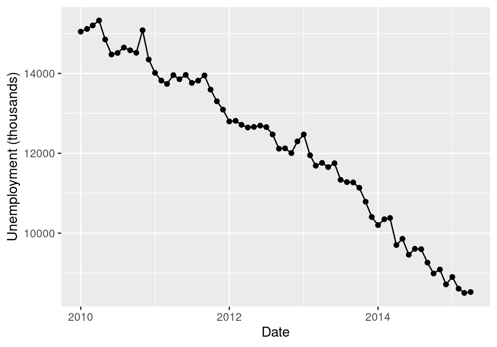
Figure 3.13: Line plot with points.
Boxplot with individual points: Overlay raw data on a boxplot:
ggplot(mpg, aes(x = drv, y = displ)) +
geom_boxplot(outlier.shape = NA) +
geom_jitter(width = 0.2, alpha = 0.5) +
labs(x = "Drive Type", y = "Engine Displacement (L)")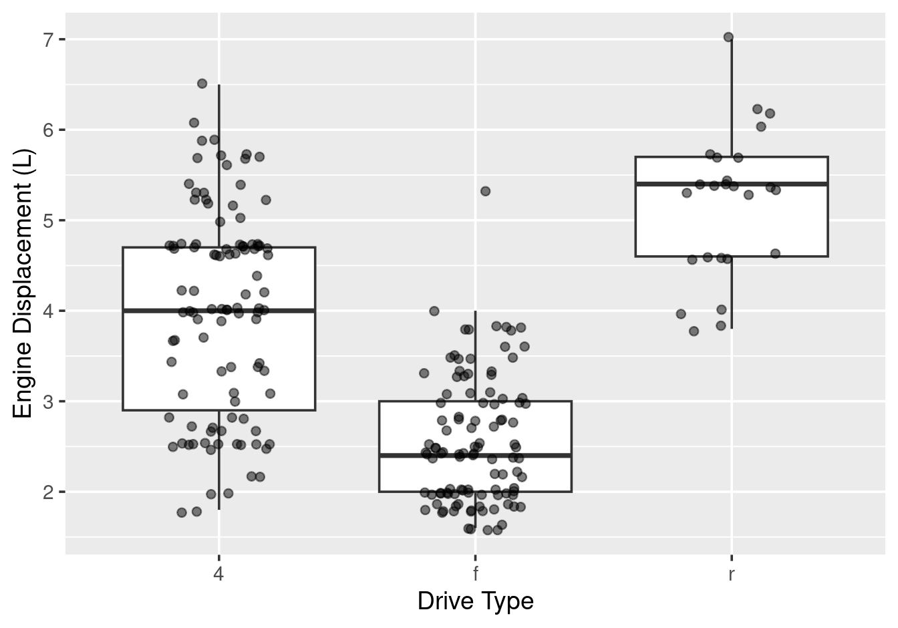
Figure 3.14: Boxplot with jittered points overlay.
Density plot with rug: Show individual observations along the axis:
ggplot(mpg, aes(x = displ)) +
geom_density() +
geom_rug() +
labs(x = "Engine Displacement (L)", y = "Density")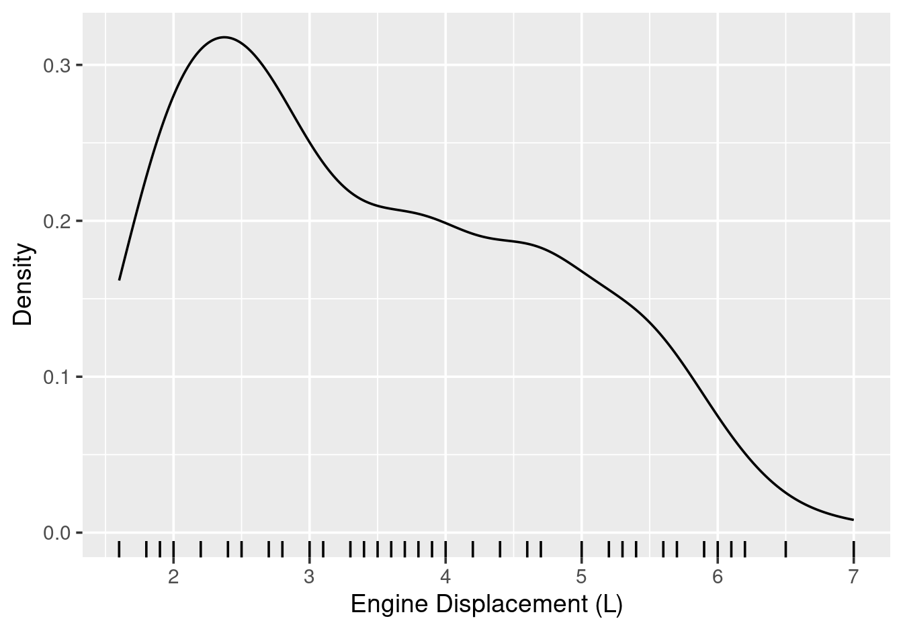
Figure 3.15: Density plot with rug.
3.9.2 Computed geoms
In some sense, the boxplot in e.g. Figure 3.14 is a “computed” geom as it’s not the raw data but a summary that we are displaying. This can be extended to other kinds of geoms, provided that they are appropriate for the nature of the variables.
Scatterplot with trend line: Add geom_smooth() to show the trend:
ggplot(mpg, aes(x = displ, y = hwy)) +
geom_point() +
geom_smooth() +
labs(x = "Engine Displacement (L)", y = "Highway MPG")## `geom_smooth()` using method = 'loess' and formula = 'y ~
## x'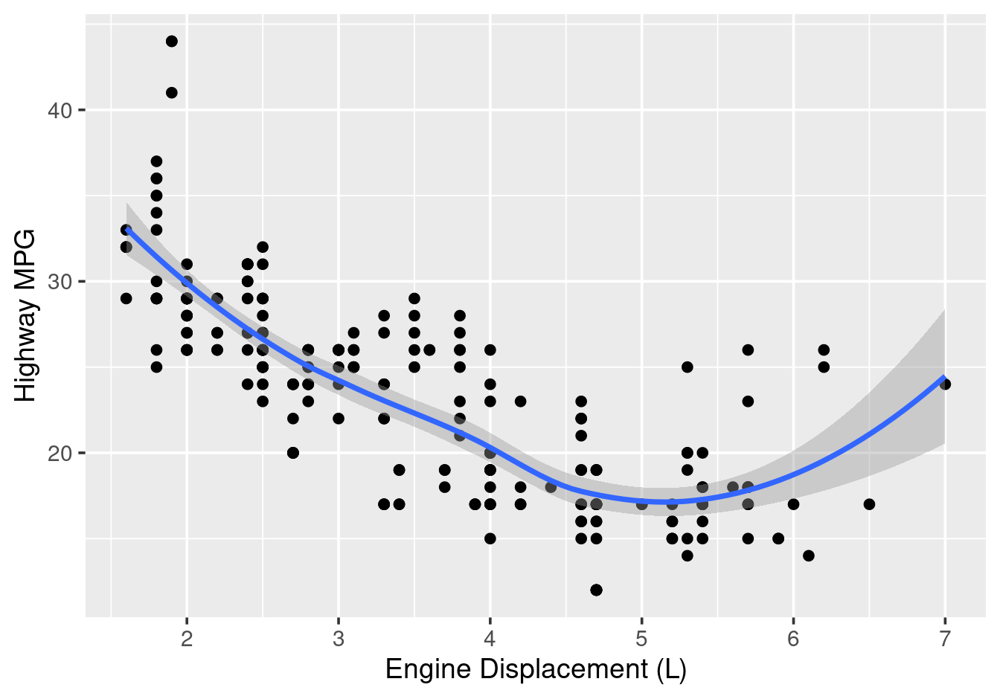
Figure 3.16: Scatterplot with smoothed trend line.
For a linear regression line:
ggplot(mpg, aes(x = displ, y = hwy)) +
geom_point() +
geom_smooth(method = "lm", se = FALSE) +
labs(x = "Engine Displacement (L)", y = "Highway MPG")## `geom_smooth()` using formula = 'y ~ x'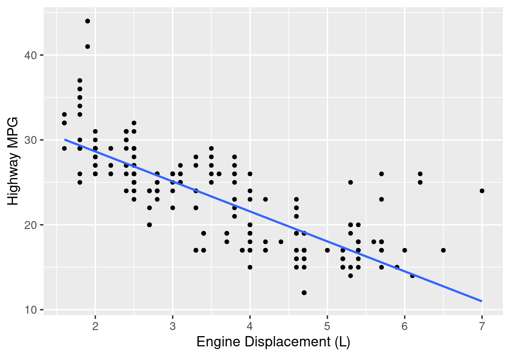
Figure 3.17: Scatterplot with linear regression line.
The order of layers matters: later layers are drawn on top of earlier ones.
3.9.3 Plotting multiple datasets
Each geom can have its own data source. This is useful when combining raw data with summary statistics:
# Create a summary dataset
drv_summary <- mpg |>
group_by(drv) |>
summarise(mean_displ = mean(displ))
# Plot individual observations and group means
ggplot() +
geom_jitter(data = mpg,
aes(x = drv, y = displ),
alpha = 0.3, width = 0.2) +
geom_point(data = drv_summary,
aes(x = drv, y = mean_displ),
colour = "red", size = 4) +
labs(x = "Drive Type", y = "Engine Displacement (L)")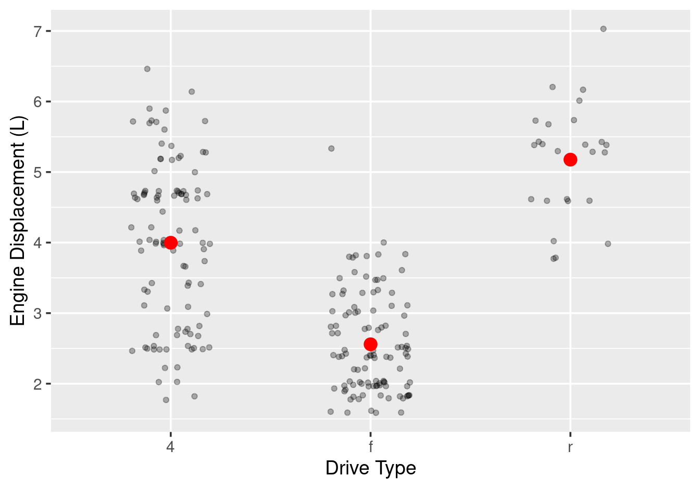
Figure 3.18: Plotting data from two different data frames.
Note how we start with an empty ggplot() call and specify the data
within each geom. For an alternative that avoids the separate summary data
frame entirely, see Section 7.5 in Chapter 7.
3.9.4 Overlaying (straight) lines
You might notice that Figure 3.17 is equivalent to Figure 2.6. For the latter, which uses base R, we had to add the line manually using abline(). For the former, we don’t need to pre-compute the regression line, but we can if we want:
lm0 <- lm(hwy ~ displ, data = mpg)
ggplot(mpg, aes(x = displ, y = hwy)) +
geom_point() +
geom_abline(
intercept = lm0$coefficients[1],
slope = lm0$coefficients[2],
colour = "blue"
) +
labs(x = "Engine Displacement (L)", y = "Highway MPG")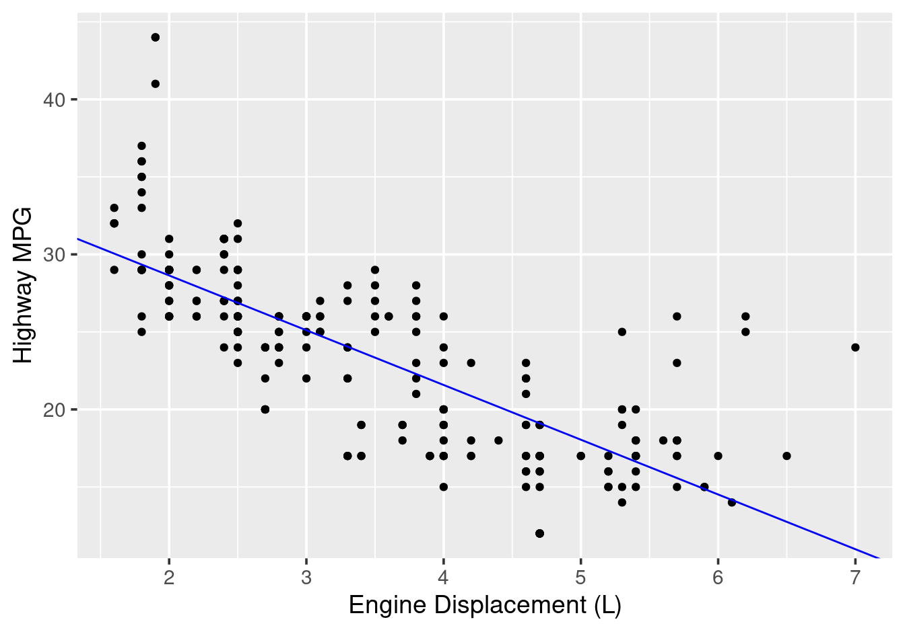
Figure 3.19: Scatterplot with linear regression line
Notice that intercept and slope are not within an aes() because they are just fixed values.
While using geom_abline() here requires an extra line with lm(), its flexibility lies in that you can add a straight line of any intercept and slope.
3.9.5 Histogram with density overlay
A common technique is overlaying a histogram with a density curve. This
requires putting both on the same scale, which involves using after_stat()
— covered in Chapter 7.
3.10 Syntax notes
Having seen many examples, let us now discuss some key differences between
ggplot2 syntax and the base R commands in Chapter 2.
3.10.1 No dollar sign needed
In base R, we access variables using the dollar sign syntax:
hist(mpg$displ)
plot(mpg$displ, mpg$hwy)
boxplot(displ ~ drv, data = mpg)In ggplot2, the syntax is streamlined so that we can write variable names
directly without the dollar sign or quotes:
ggplot(mpg, aes(x = displ)) + geom_histogram()
ggplot(mpg, aes(x = displ, y = hwy)) + geom_point()
ggplot(mpg, aes(x = drv, y = displ)) + geom_boxplot()This is because ggplot2 uses non-standard evaluation: once you specify
the data frame, the function knows to look for column names within that
data frame. This makes the code cleaner and easier to read.
3.10.2 The aes() function
The aes() function is essential for mapping variables to visual
properties. A common beginner mistake is to forget aes():
# This will NOT work - colour is not inside aes()
ggplot(mpg, aes(x = displ, y = hwy)) +
geom_point(colour = drv) # Error!
# This WILL work - colour is mapped via aes()
ggplot(mpg, aes(x = displ, y = hwy)) +
geom_point(aes(colour = drv))The rule is simple:
- When you map an aesthetic to a variable, put it inside
aes(). - When you set an aesthetic to a fixed value (like
colour = "red"), put it outsideaes().
3.10.3 A note on qplot()
When you run some older ggplot2 code, you may see a function called
qplot() (quick plot). This was designed as a transition function to help
users move from base R graphics to ggplot2. However, qplot() is now
deprecated, meaning it still works but is no longer recommended. We will
use the full ggplot() syntax throughout, which provides more control and
better communicates the grammar of graphics concepts.
3.10.4 Equivalent syntax forms
The following three lines of code produce identical plots:
# Form 1: Aesthetics in ggplot()
ggplot(mpg, aes(x = displ, y = hwy)) +
geom_point()
# Form 2: Aesthetics in geom_*()
ggplot(mpg) +
geom_point(aes(x = displ, y = hwy))
# Form 3: Data piped in
mpg |>
ggplot() +
geom_point(aes(x = displ, y = hwy))Form 1 is most common and is what we use throughout this module. However, Forms 2 and 3 become useful in specific situations:
- Form 2 is helpful when different geoms use different aesthetics
(e.g., one geom uses
colour = drvand another doesn’t). - Form 3 integrates well with
dplyrpipelines, where you might filter or mutate data before plotting.
Caveat: When using multiple geoms or multiple datasets, the placement
of aesthetics matters. Aesthetics defined in ggplot() are inherited by
all geoms, while aesthetics defined within a specific geom_*() apply
only to that geom. We saw this in Section 3.9.3 where
different geoms used different data sources.
3.11 Summary
3.11.1 Choosing the right plot
The appropriate plot type depends on the nature of your variables. This
table shows the correspondence between base R functions (Chapter
2) and ggplot2 geoms:
| Variables | Base R | ggplot2 |
|---|---|---|
| One continuous (distribution) | hist() |
geom_histogram() |
| One continuous (density) | plot(density()) |
geom_density() |
| One continuous (summary) | boxplot() |
geom_boxplot() |
| One discrete | barplot(table()) |
geom_bar() |
| Two continuous (relationship) | plot() |
geom_point() |
| Two continuous (time series) | plot(type = "l") |
geom_line() |
| Multiple pairs of continuous | pairs() |
ggpairs() (GGally) |
| One cont., one discrete (points) | stripchart() |
geom_jitter() |
| One cont., one discrete (summary) | boxplot() |
geom_boxplot() |
| Two discrete (bars) | barplot() |
geom_bar() with fill |
| Two discrete (counts) | table() |
geom_count() |
| Two continuous \(+\) smooth line | geom_point() + geom_smooth() |
|
| Two continuous \(+\) straight line | abline(lm()) |
geom_point() + geom_smooth(method = "lm") |
| Two continuous \(+\) straight line | abline(lm()) |
geom_point() + geom_abline() |
3.11.2 Main principles
Based on what we have learned in this chapter, we can summarise the key
principles for data visualisation with ggplot2:
Check if your data is tidy, and convert if not. The
ggplot2framework expects tidy data where each variable is a column. If your data is in a special format (like atsobject or a matrix with values in row/column names), convert it to a tidy data frame before plotting. This may require data wrangling, but the result is a consistent workflow.Use the unified framework instead of relying on different base R functions. Base R graphics use different functions with different syntaxes for different plot types — and some functions only work with special object classes. The
ggplot2framework provides a single, consistent grammar that works for any tidy data frame. Learn the grammar once, and you can create any visualisation.No dollar signs needed. Unlike base R where you write
mpg$displ, inggplot2you simply writedisplinsideaes(). The function automatically looks for variables within the specified data frame.Use
aes()for variable mappings. Map variables to aesthetics insideaes()(e.g.,aes(colour = drv)). Set fixed values outsideaes()(e.g.,colour = "red").Multiple equivalent forms exist. Aesthetics can be specified in
ggplot()or in individualgeom_*()functions, and data can be piped in. When using multiple geoms or datasets, be mindful of where aesthetics are defined — those inggplot()are inherited by all geoms.
3.11.3 Features covered in later chapters
- Colour scales: Customising colours for categorical and continuous variables (Chapter 4)
- Other scales: Shapes, linetypes, sizes, and axis transformations (Chapter 5)
- Plot cosmetics: Themes, labels, legends, facets (Chapter 6)
- Statistical transformations: Using
after_stat(),stat_summary(), and understanding stats (Chapter 7)
References
Wickham, Hadley. 2016. ggplot2: Elegant Graphics for Data Analysis. Use R! Springer.
Wilkinson, Leland. 2005. The Grammar of Graphics. 2nd ed. Statistics and Computing. Springer.